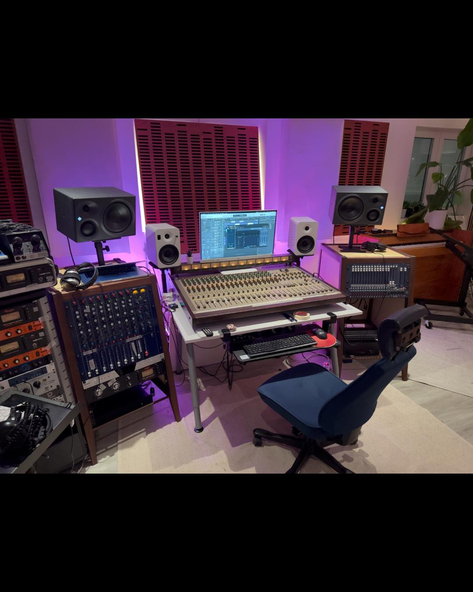
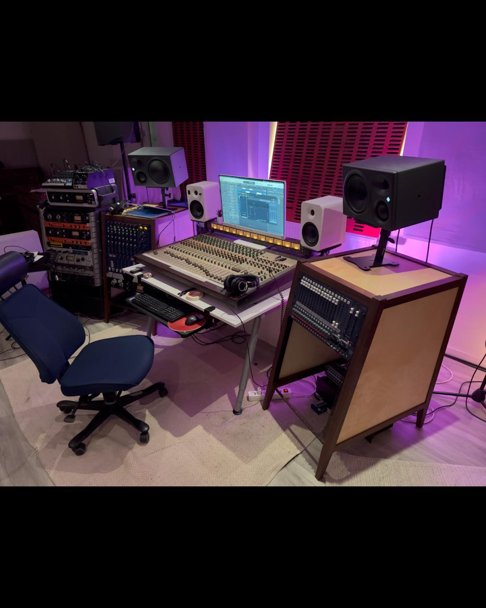
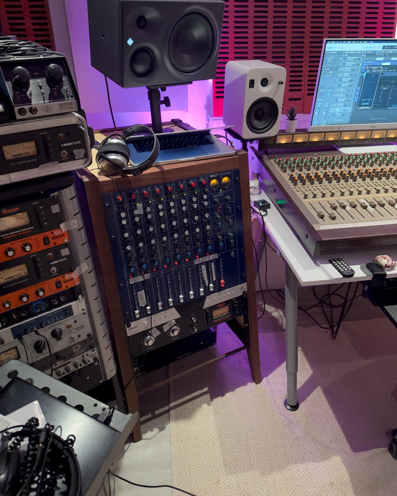
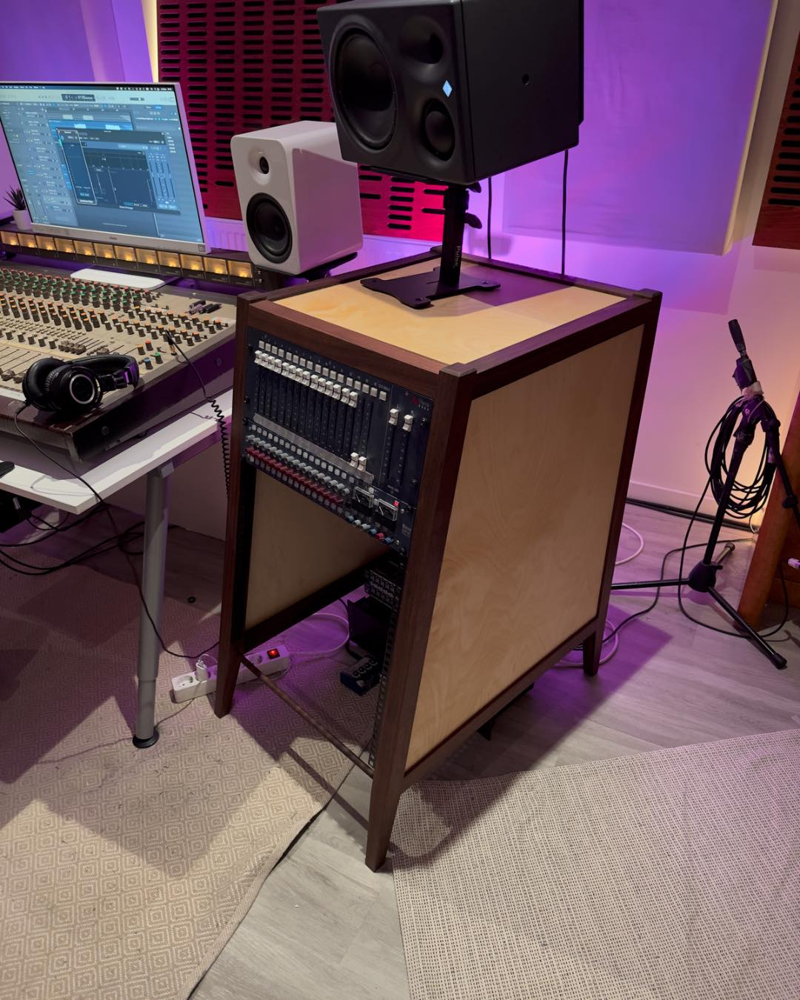

Huvudstudion
Fullt utrustad inspelningsstudio för musikproduktion, band och professionell mixning.
← TillbakaFullt utrustad inspelningsstudio för musikproduktion, band och professionell mixning.
← TillbakaStudio A är vår huvudstudio med fokus på högkvalitativ inspelning och analog/digital produktion.



